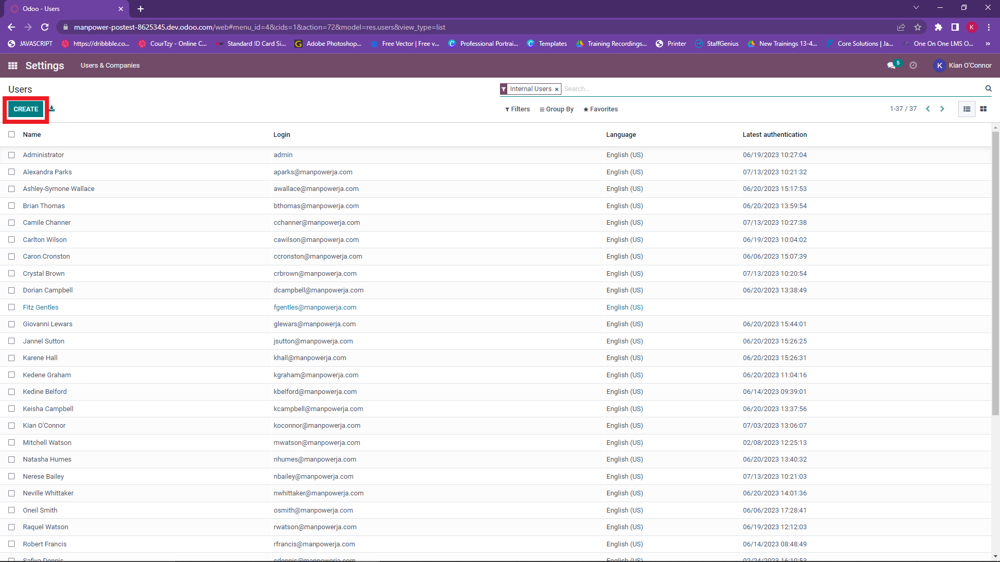
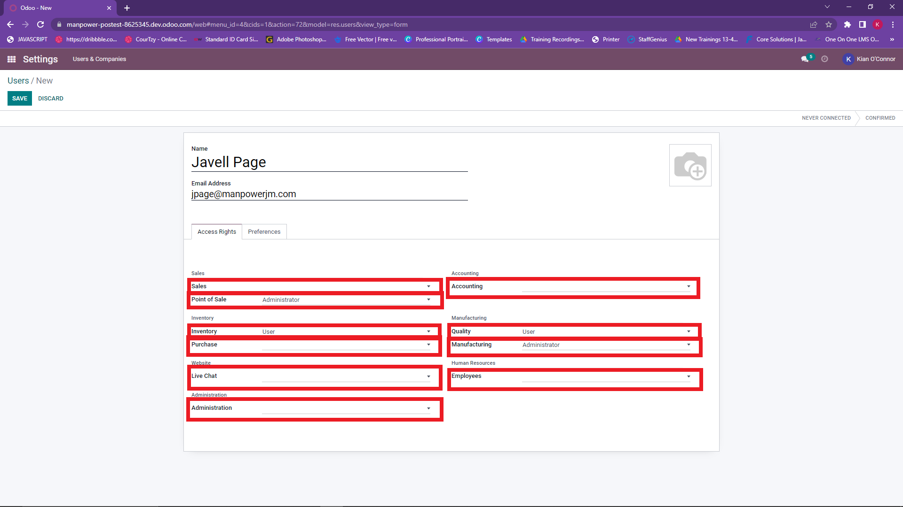

Administrator Tutorials
Add a user
- Open the settings module.
- Click the create button.

- Add user's name and email address.

- Specify their level of access for various modules.

- Click the save button.

- User has successfuuly been added. The system has sent an invitation to the user's email address.
Add new employee
- Open the employees module.
- Click the create button.
- Fill all relevant fields (Name, Position, Work Mobile, Work Email, Department, Manager etc.)
- Go to the hr settings tab.
- Fill out all fields(Employee Type, Related User). If there is no related employee, that field can be left null.

- Click the save button.
- New employee has been successfully added.
Add new employee to Point to Sales
- Open the Point of Sales module.
- Click on the three dots on the Point of Sales Location employee is to be added to.
- Click on the settings option.
- Enter the employees name in the authorized employees field.
- Click the save button.
- Employee has been successfully added to the Point of Sales.
Change pin for POS
- Ask user to click on their name on the dashboard.
- Select the my profile option.

- Select the hr setting tab.
- Click the edit button.
- Enternew pin in the pin field.

- Click the save button.
- User's POS pin has been updated.
Create new pricelist
- Open the sales module.
- Open the products tab.
- Select the pricelist option.
- Click the create button.
- Enter the name of the pricelist.
- Click the add a line tab to add each criteria for this pricelist. This can be applied to all products, a specific product or a group of products.
- Select the options relevant to the rule you want to apply.
- Click the save and close button.
- Once you have finished adding all rules, click the save button.
- New pricelist has been successfully created.
Edit pricelist
- Open the sales module.
- Open the products tab.
- Select the pricelist that needs to be editted.
- Click the add a line tab to add each criteria for this pricelist. This can be applied to all products, a specific product or a group of products.
- Select the options relevant to the rule you want to apply.
- Click the save and close button.
- After making all edits, click the save button

- Pricelist has been successfully editted.
Create new journal
- Open the accounting module.
- Open the configuration tab.
- Select the jornal option.
- Click the create button.
- Open the name and type of jornal.
- Fill all relevant information for the journal.
- Only for bank and cash journals: Go to incoming payments tab.
- Only for bank and cash journals: Click on the three dots.
- Only for bank and cash journals: Click the checkbox to make outstanding receipts accounts column.

- Only for bank and cash journals: Enter outstanding receipts account.
- Only for bank and cash journals: Go to outgoing payments tab.
- Only for bank and cash journals: Click on the three dots.
- Only for bank and cash journals: Click the checkbox to make outstanding payments accounts column.
- Only for bank and cash journals: Enter outstanding payment account.
- Click the save button.
- Jornal has been sucessfully created.
Create Report Template.
- Open any of the modules
- Click the checkbox beside records you want report formatter to capture.
- Click the action tab.
- Select the export option.
- Select the fields ypiu want to be visible in the report.
- Click the down arrow in the template field.
- Select the new template option.
- Type the name to be assigned to the template.
- Click the save button.
- Template has successfully been created.